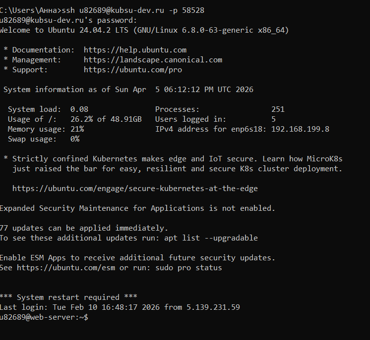
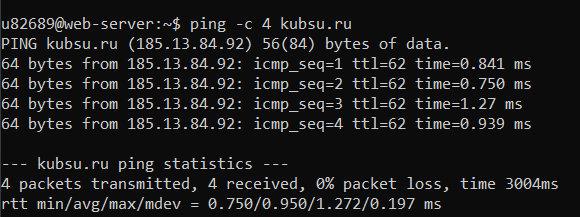
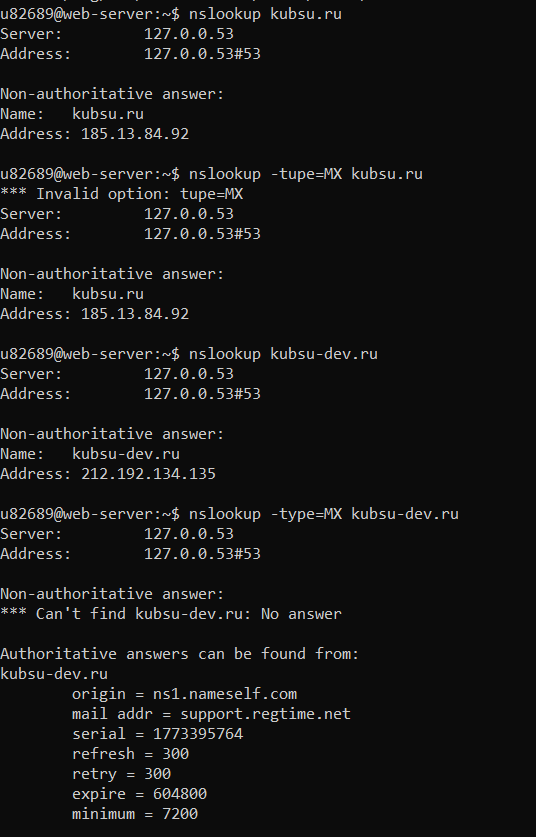
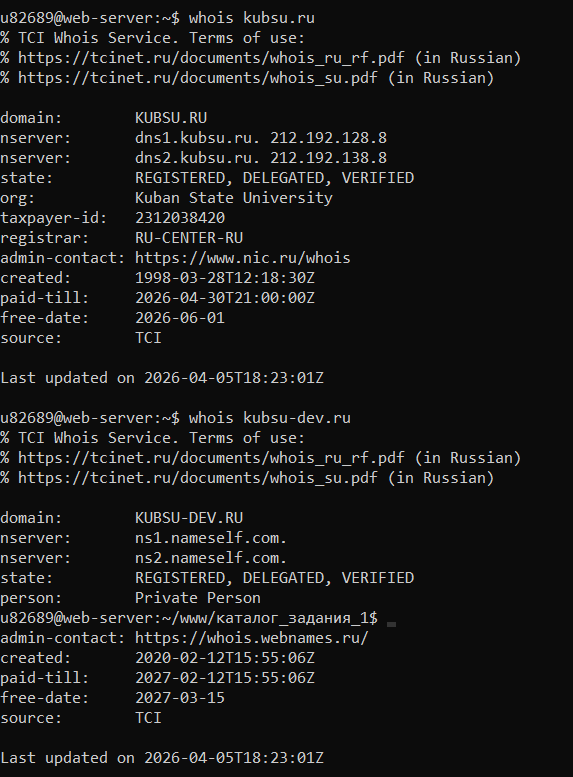
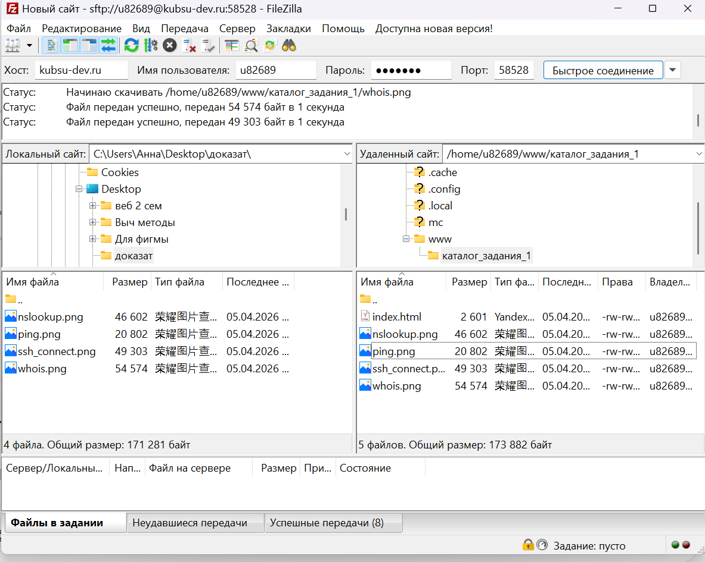

Студент: u82689
Дата выполнения: Апрель 2026

Рисунок 1 — Подключение к серверу kubsu-dev.ru

Рисунок 2 — IP-адрес веб-сервера kubsu.ru: 212.192.128.33

Рисунок 3 — A-записи и MX-записи доменов kubsu.ru и kubsu-dev.ru

Рисунок 4 — Дата регистрации kubsu.ru и kubsu-dev.ru

Рисунок 5 — Копирование файлов через SFTP
Git-репозиторий: (ссылка на твой репозиторий)
Сайт на сервере: http://u82689.kubsu-dev.ru/каталог_задания_1/